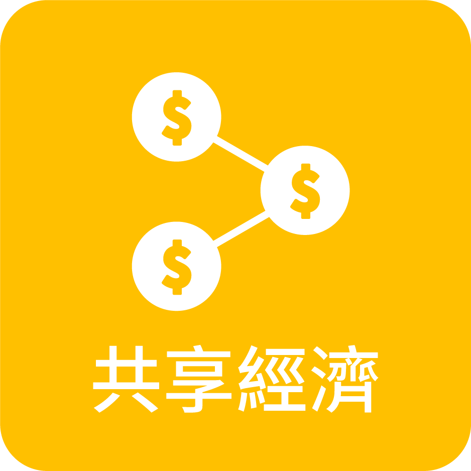

網路服務應用概況
社會應用
內容媒體
社群媒體
智慧裝置
教育應用

線上遊戲
經濟應用

電子商務
金融科技
共享經濟
創新概念
人工智慧
自動駕駛

區塊鏈
前瞻亮點趨勢分析
前瞻亮點趨勢分析
1.
從網路使用行為探討族群輪廓差異
女性網購多、男性消費高；各族群中，以樂齡男女網購表現差異小；男女性網購使用裝置排序相同，男性用桌機／筆電比率更高、女性則是行動裝置多。
族群網購力
網購行為的性別差異
| 男性 | 女性 | |||
|---|---|---|---|---|
| 網購使用裝置 | 桌機／筆電 | 84.6% | 桌機／筆電 | 78.4% |
| 智慧型手機 | 55.4% | 智慧型手機 | 63.4% | |
| 平板電腦 | 13.3% | 平板電腦 | 15.9% | |
| 網購原因 | 方便搜尋商品資訊 | 79.4% | 方便搜尋商品資訊 | 77.3% |
| 省時／交通成本 | 67.0% | 容易比價 | 69.6% | |
| 種類很多 | 65.1% | 隨時想買都可以 | 61.5% | |
| 價格便宜 | 62.6% | 價格便宜 | 57.2% | |
樂齡族網路使用特色
2.
智慧家庭發展的硬體和服務整合應用
台灣智慧家庭的相關產品使用率普遍不及一成，其中以家電和遠端控制裝置使用率最高。跟美國20%的數位網路家庭已使用智慧音箱的高普及度相較之下，台灣的智慧音箱使用率和必備產品清單中，都非智慧家庭相關設備首選。台灣智慧家庭是以硬體設備發展開始，而需求度最高的產品則是安全監控類。
智慧家庭產品使用率
智慧家庭必備產品
3.
網路社群與經濟轉變下的電子商務趨勢
2017-2018年，行動支付整體使用率增加 2.3% 未見明顯成長，但從 Apple Pay 轉移到 LINE Pay；而社群直播與分享推薦的特性，使得社群不再單純是社交平台。
行動支付品牌市佔變化
電商購物與直播平台
整體網路使用現況
整體網路使用現況
個人上網
上網率
82.1%
平均每日上網
4.3 小時
網民輪廓
不同性別之上網率差異小，12歲至49歲上網率皆超過九成
使用習慣概況
最常連網方式
行動電信網路
65.9%
ADSL
24％
最常使用裝置
手機
96.8%
桌機/筆電
66.4%
個人曾經上網比例與人數
12歲以上曾經上網民眾雖較去年略降，仍在誤差範圍內。
主要上網地點
家中
94.1%
工作場所/公司
38.8%
近半年使用行動/無線區域網路上網
12歲以上近半年使用行動上網人數增加較多，而無線區域網路使用率則下降一成五。
家戶上網
上網率
80.9%
705萬戶
使用寬頻上網
99.9%
平均每月花費
855元
平均滿意度
3.5分
歷年家戶上網比例與人數
家戶上網率為80.9%
網路基礎邏輯層面
網域名稱註冊數量
今年「.tw/.台灣」註冊數量大幅成長，成長率為554.3%，類型佔比中以「泛用型英文.tw」最多。
近半年使用行動/無線區域網路上網
12歲以上近半年使用行動上網人數增加較多，而無線區域網路使用率則下降一成五。
台灣 IPv6／ISP 數量統計
台灣IP位址核發數量，在IPv6位址發放數量統計上，台灣居全球第19名。
| 類型 | 業者 | 佔比 |
|---|---|---|
| 行動網路 | 中華電信 CHT Mobile | 70.08% |
| 遠傳電信 FETNet | 35.15% | |
| 台灣大哥大 Taiwan Mobile | 22.53% | |
| 亞太電信 AMBIT | 2.43% | |
| 台灣之星 VIBO | 0.08% | |
| 固網電信 | 中華電信 CHT Fixed Network | 17.51% |
| 台灣固網 TFN | 0.46% | |
| 新世紀資通 Seednet | 0.3% | |
| 亞太電信 APOL | 0.11% |
網路服務應用概況
社會應用
內容媒體
社群媒體
智慧裝置
教育應用
線上遊戲
經濟應用
電子商務
金融科技
共享經濟
創新概念
人工智慧
自動駕駛
區塊鏈
國際現況介紹比較
台灣網路競爭力評比
全球競爭力中的資訊科技完備構面中，台灣排名25名，該構面的各指標項目中，以網民平均頻寬排名表現最佳
| 基本資料 | |
|---|---|
| 人口數 | 23.5（百萬） |
| GDP | USD＄528.6 |
| 人均 GDP | USD＄22453.4 |
| GDP (PPP) % world GDP | 0.94 |
| 競爭力表現 | 排名 全137名 |
分數 |
|---|---|---|
| 全球總排名 | 15 | 5.3 |
| 資訊科技準備程度 | 25 | 5.7 |
| 最新科技執行性 | 30 | 5.6 |
| 商業規格技術層級 | 29 | 5.2 |
| 直接外資和技術轉讓 | 35 | 4.9 |
| 上網率 | 30 | 79.7 |
| 寬頻上網率 | 40 | 24.2 |
| 網民分配平均頻寬(kb/s) | 6 | 717.6 |
| 行動上網率 | 29 | 90.8 |
各國網路使用狀況
根據 Comscore MMX 截至10月份數據
| Total UV (000) |
Total Views (MM) |
Total Visits (000) |
Average Views per Visit |
Average Views per Visitor |
Total Minutes (MM) |
|
|---|---|---|---|---|---|---|
| 台灣 | 16,532 | 35,102 | 2,170,146 | 16.2 | 2,123 | 36,369 |
| 中國 | 871,522 | 918,857 | 27,840,677 | 33.0 | 1,054 | 3,208,950 |
| 印度 | 273,288 | 224,147 | 27,154,589 | 8.3 | 820 | 889,666 |
| 印尼 | 89,085 | 47,455 | 2,891,046 | 16.4 | 533 | 344,471 |
| 日本 | 81,714 | 129,595 | 3,655,945 | 35.4 | 1,586 | 115,862 |
| 越南 | 45,680 | 39,179 | 2,278,515 | 17.2 | 858 | 47,551 |
| 馬來西亞 | 19,940 | 23,185 | 1,268,714 | 18.3 | 1,163 | 90,630 |
| 新加坡 | 4,926 | 5,888 | 421,768 | 14.0 | 1,195 | 8,213 |
| 美國 | 256,264 | 716,661 | 49,156,381 | 14.6 | 2,797 | 1,751,664 |
| 英國 | 48,988 | 130,835 | 7,357,075 | 17.8 | 2,671 | 266,450 |
| 澳洲 | 20,614 | 24,814 | 1,585,315 | 15.7 | 1,204 | 39,268 |
各國網域／IPv4／IPv6 統計
亞洲各國的網域註冊數量與 IP 位址皆以中國最多，台灣 IPv6 全球排名第19名，IPv6 比例為28.8%。
各國上網行為與裝置分析
多數國家的網路社群媒體使用率最高，桌機/筆電上的使用行為則較手機少。
網路購物使用裝置
主要使用的網路購物裝置為桌上型電腦或筆記型電腦。
| 桌機／筆電 | 手機 | 平板電腦 | |
|---|---|---|---|
| 台灣 | 85% | 10% | 3% |
| 日本 | 92% | 6% | 1% |
| 新加坡 | 74% | 18% | 5% |
| 馬來西亞 | 72% | 20% | 6% |
| 越南 | 71% | 18% | 4% |
| 南韓 | 70% | 25% | 2% |
| 中國 | 70% | 21% | 4% |
| 菲律賓 | 66% | 23% | 4% |
| 印度 | 60% | 34% | 1% |
| 泰國 | 57% | 31% | 4% |
| 印尼 | 29% | 67% | 1% |
| 美國 | 81% | 10% | 6% |
| 英國 | 81% | 7% | 9% |
| 澳洲 | 80% | 10% | 7% |
各國穿戴式裝置持有率
馬來西亞為亞洲地區穿戴裝置持有率最高的國家，其他國家則只有一成內的使用者。
| 地區 | 國家 | 持有率 |
|---|---|---|
| 亞洲 | 台灣 | 6%
|
| 馬來西亞 | 12%
|
|
| 中國 | 8%
|
|
| 新加坡 | 7%
|
|
| 南韓 | 6%
|
|
| 菲律賓 | 3%
|
|
| 印度 | 4%
|
|
| 日本 | 3%
|
|
| 印尼 | 1%
|
|
| 越南 | 1%
|
|
| 泰國 | 0%
|
|
| 其它 | 美國 | 14%
|
| 澳洲 | 12%
|
|
| 英國 | 9%
|
穿戴式裝置市佔率
Apple和Samsung並列為使用者最多的品牌。
Apple市佔最高國家
Samsung市佔最高國家
Copyright © 2018 財團法人台灣網路資訊中心
社群通訊使用情形
使用者輪廓
通訊與社群網站的使用率皆高，而通訊軟體的使用族群中性別、年齡差異小。
社群使用率
80.6%
社群媒體使用率
Facebook市佔率最高，Instagram居次，主要使用族群為20世代。
社群媒體使用行為
網民使用社群媒體主要是瀏覽、按讚，以接受資訊為主。
通訊使用率
96.8%
通訊軟體使用率
Line使用者幾乎為全體網民，其次是臉書、即時通。
通訊軟體使用行為
通訊軟體主要使用情境是收發訊息，也有超過半數使用語音通話。